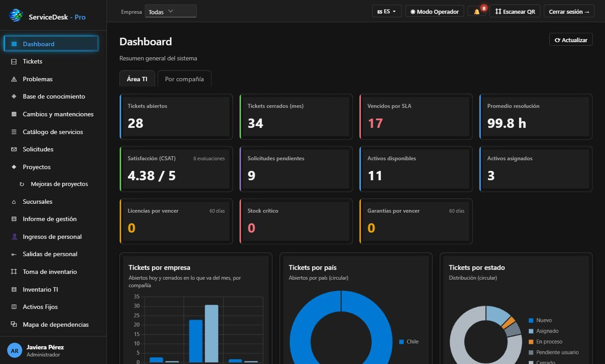
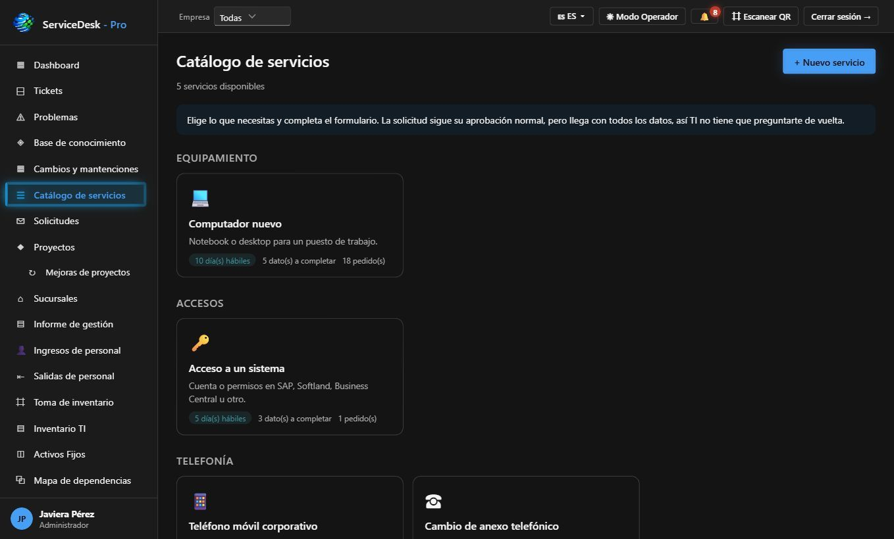
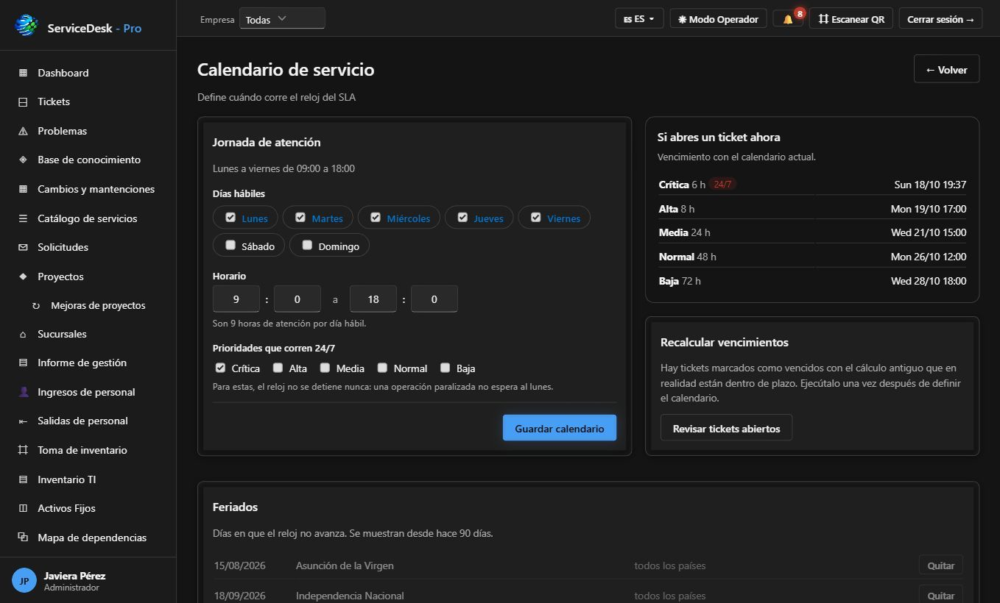
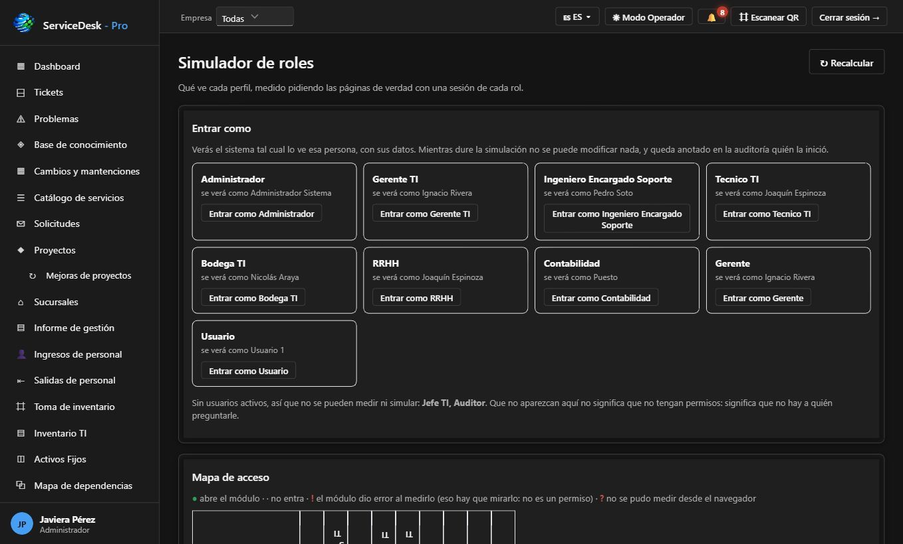

Mesa de ayuda multicanal
Atención por portal, correo, teléfono y WhatsApp, con cada contacto registrado como solicitud.
Un equipo de soporte que atiende a tus usuarios, tus aplicaciones y tu infraestructura con tiempos de respuesta comprometidos. Y como plus, ServiceDesk Pro incluido: tu equipo sube cada solicitud directamente, con evidencia, y sigue su avance en línea.
portal.certidesk.cl/serviceflexSoporte integrado · incluye ServiceDesk Pro
ServicesDesk es el servicio de soporte de IntegralFlex Suites. Nuestro equipo se hace cargo de la atención de primer y segundo nivel de las aplicaciones de la suite, de los usuarios finales y de los equipos y cuentas de tu empresa, con prioridades acordadas y tiempos de respuesta medidos.
El plus es ServiceDesk Pro: la plataforma de mesa de ayuda queda disponible para tu empresa sin costo adicional. Tus usuarios ingresan sus solicitudes directamente en el portal o desde el celular, adjuntan capturas, archivos o fotos, y reciben avisos en cada cambio de estado hasta el cierre y la encuesta de satisfacción.
Cada mes recibes un informe de gestión con solicitudes atendidas, cumplimiento de SLA, satisfacción y temas recurrentes, para decidir mejoras con datos. El servicio se combina con cualquier aplicación de la suite y crece con tu equipo.
Atención por portal, correo, teléfono y WhatsApp, con cada contacto registrado como solicitud.
Prioridades y tiempos de respuesta y solución acordados, con alertas antes del vencimiento.
Tu equipo ingresa las solicitudes directamente en la plataforma, con adjuntos y categoría, sin pasar por intermediarios.
Estado, responsable y avance visibles para quien pidió el soporte, con avisos en cada cambio.
Atención funcional y técnica de las aplicaciones IntegralFlex que tengas contratadas.
Altas, bajas y cambios de cuentas, ingreso y salida de personal coordinado con RRHH.
Soporte a computadores, impresoras y telefonía, con inventario de activos y licencias.
Conexión remota con autorización del usuario y registro de cada intervención.
Respuestas a las consultas frecuentes para que tus usuarios resuelvan lo simple por su cuenta.
Solicitudes por tipo, cumplimiento de SLA, satisfacción y recomendaciones de mejora.
Tus usuarios crean y siguen sus solicitudes desde el celular.
Cada cierre se evalúa, y la nota alimenta el informe y la mejora continua.
La plataforma donde tu equipo sube los soportes directamente y sigue cada solicitud hasta su cierre.
Pantallas reales del sistema con datos de demostración: los nombres de personas, empresas y correos son ficticios.




Tu usuario sube el soporte en ServiceDesk Pro, por correo o por teléfono, con capturas o archivos.
La solicitud recibe categoría, prioridad y SLA, y se asigna al especialista adecuado.
Nuestro equipo atiende en sitio o en remoto y registra cada avance en la plataforma.
El usuario confirma y evalúa la atención, y todo queda en el informe mensual.
Servicio gestionado por IntegralFlex con ServiceDesk Pro incluido como plataforma
Portal web, app móvil, correo, teléfono y WhatsApp
Horario hábil, con opción de cobertura extendida o 24/7 para incidentes críticos
Aplicaciones de la suite, usuarios finales, cuentas, equipos e infraestructura
Microsoft 365 (SSO) y roles por función, multiempresa
Informe de gestión mensual con SLA, satisfacción y temas recurrentes
Cotizamos el servicio según tus usuarios y el alcance que necesites, con ServiceDesk Pro incluido para que tu equipo suba sus soportes desde el primer día.